Branding
Branding
13 Top Must-Read Books for Web and Graphic Designers
From small-time gigs to booming creative industries, web and graphic designers have taken centre stage. Whether you’re a rookie or a design virtuoso…

I lost two companies before Pixel Street, and the studio I run now rebrands other people’s. That combination has made me suspicious of this entire genre of article.
Every rebranding guide is written forwards, as a roadmap. Almost none of them is ever written backwards. Nobody returns to the famous case studies three years later to check whether the rebrand actually held, which means the same dozen examples keep getting recycled long after the companies attached to them have changed their minds, or stopped existing.
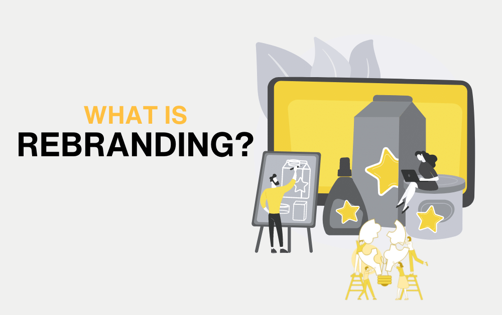
So on 31 July 2026 I went through every company named on this page and checked what became of it. One brand these lists still hold up as a rebranding success has since been sold out of bankruptcy court. One they file as a failure went bankrupt as well, and has quietly gone back to the name it abandoned. A third had to hire a new chief executive to walk the company back to the positioning its own rebrand had promised years earlier.
Rebranding itself is straightforward to define. You change some combination of name, logo, visual system and positioning so that what people think of you matches what you now are. The hard part is not the definition and it is not the design. It is that a rebrand is a promise about behaviour, and the market audits that promise for years afterwards. Every example below carries a date and an outcome, and where the outcome contradicts the lesson, I have said so rather than dropped the example.
Can you name a business that changed its branding ostensibly for no good reason? Or, perhaps one that has stubbornly maintained an outdated brand image for too long?
Businesses frequently fall into the trap of believing they need to “refresh” their image just because they have been using it for a while. Or, on the opposite extreme of the spectrum, they develop a fear of changing since their brand is well-known.
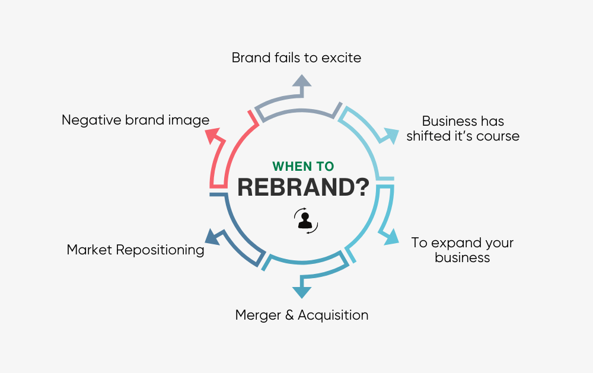
Here are a few reasons why you should opt for rebranding your business:
Your brand should make people excited about your business. If it does not, it means your branding is not working hard enough. Even if you offer serious products or services, having an engaging and dynamic brand identity can still be beneficial. Your branding influences how people see your company and understand what you offer.
A brand that has stopped working is usually easier to see from outside the company than inside it. Coca-Cola announced its “One Brand” packaging strategy on 18 April 2016, putting the Red Disc across Classic, Zero, Light and Life so that the trademark led and the variant followed. We design for Coca-Cola, so I will hand the criticism to someone with nothing to protect. When the company evolved that system in April 2021 and dropped the disc, BrandOpus chief executive Nir Wegrzyn argued in Transform that the result was still not intuitive, because Coca-Cola “still has two brand names (Diet Coke and Coca-Cola), three identity colours (red, black and silver) and two packaging colours”. That is the trade every unification exercise makes. A shopper gets faster at spotting the brand and slower at telling the variants apart, and you need to know in advance which of the two you were short of.
That debate has since moved on. On 20 July 2026 Coca-Cola announced a new global visual identity system, rolling out across more than two hundred markets from Latin America, Europe, the Middle East and Asia, with North America following in 2027. The wordmark returns to vertical on the can after about a decade horizontal, and Zero Sugar gets its own black ribbon and cap. Read it as a correction inside the same logic rather than a repudiation of it: still one system, but with the variants allowed to look different enough to find. Ten years and three months is how long the version it replaces stood, which is a useful number to hold in your head the next time someone tells you an identity is permanent.
Some brands are desperately in need of a rebrand to overcome an identity crisis and resolve the confusion surrounding their messaging process. When a brand is sending mixed signals and struggling to define its purpose, a rebrand can provide a fresh start and help rediscover its true identity.
Other companies may require a rebrand due to reputational damage caused by scandals or controversies. Facebook, for instance, faced a tumultuous year of data privacy concerns and opted for a rebrand to reshape its public perception.
Sometimes, as your company grows and changes, the branding you started with does not fit anymore. Starbucks, a small coffee bean retailer, rebranded itself as a global coffeehouse chain selling a place to sit rather than a bag of beans. That repositioning worked, and then it wore off. Brian Niccol became chief executive on 9 September 2024 and published a “Back to Starbucks” open letter the following day, conceding that the experience had come to feel transactional, the menu overwhelming and the handoff hectic. That is an unusually blunt admission: the company had drifted into being a mobile-order queue and had to be walked back to the coffeehouse promise its own repositioning had made. The plan is operational, not visual. Seating, ceramic mugs, condiment bars, a shorter menu. Nobody redrew the siren, because the siren was never the problem.
Keep that one in mind, because it is the pattern I see most often in client work. A rebrand is a promise about behaviour. If the behaviour drifts, the identity does not save you, and no amount of redesign gets the promise back. Only doing the thing does.
Another reason for rebranding is when the world around you changes, like when new technology replaces old ones. Nokia, once a leader in mobile phones, faced difficulties with the emergence of smartphones. On 26 February 2023 it replaced the wordmark it had used for close to sixty years, five separate shapes spelling out the name, and chief executive Pekka Lundmark was explicit that the job was to stop people thinking “phone” and start them thinking business technology.
Nokia is routinely described as having pivoted to network infrastructure and digital health. Half of that is wrong. Nokia bought Withings in 2016 for 170 million euros, took a 141 million euro goodwill impairment on the business sixteen months later, and closed the sale of it back to a Withings co-founder on 31 May 2018, five years before the logo changed. This is what stale case studies do. They preserve a strategy the company has already abandoned, and every article that copies them extends the error by another year.
When two companies merge, their brands also merge. It’s important to create a new brand representing the combined company, instead of having both brands compete. This will avoid confusion and help establish trust among customers.
Brands are created to connect companies with their customers. Depending on whether you offer new products, move locations, adjust prices, or promote differently, your brand may need to adapt as well.
A brand refresh or update might be required to expand your business into international markets where your current logo, messaging, and other brand elements may not resonate. This means making changes to ensure that your brand connects and resonates with the new international markets you are targeting.
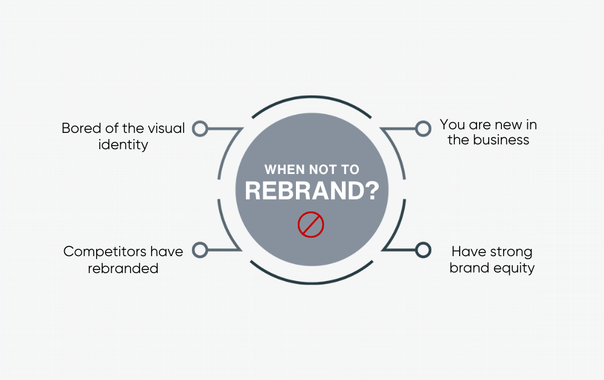
Let’s talk about when rebranding might not be the right move for your business. Here are a few instances to consider:
Just because your competitors have revamped their brands does not mean you should automatically follow suit. Instead, focus on what sets your brand apart and how you can differentiate yourself in the market.
Feeling tired of your brand’s visuals? That’s understandable, but it does not necessarily mean a full rebrand is needed. Sometimes, a freshening up of your design elements or a strategic visual update can do the trick.
If you are just starting in the business world, it’s important to establish a solid foundation before jumping into a rebrand. Focus on building your brand reputation, understanding your target audience, and refining your offerings.
If your brand has a strong reputation, loyal customer base, and positive brand equity, rebranding might risk alienating your existing customers. Consider whether the potential benefits of rebranding outweigh the potential loss of customer trust and loyalty.
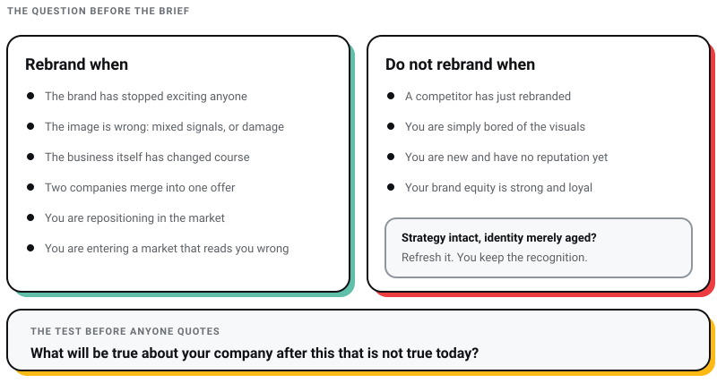
A partial rebrand involves making specific changes to your brand elements. This could include things like changing your company name, updating your logo, adjusting your color scheme, or improving your website.
For example, car rental company Hertz went through a partial rebrand when they updated their logo. The new mark still looks familiar and you might not notice the difference right away, which is exactly the intention. A partial rebrand is a legibility exercise, not an argument.
It is also worth knowing what a partial rebrand does not do. Hertz filed for Chapter 11 on 22 May 2020 when travel demand collapsed, and exited on 30 June 2021 after eliminating around five billion dollars of corporate debt. No version of that logo was ever going to be relevant to any of it. Choose a partial rebrand when the identity is genuinely the constraint, and be honest with yourself about how rarely that is true.
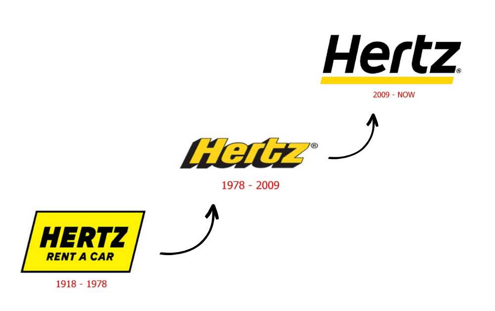
When two companies merge, it is important to introduce their new combined offering to the world. Sometimes, the two brands can fit together perfectly, and their logos can be combined into a single design. Other times, the merger may require a complete rebrand, including changing the company’s name.
An example of this type of rebranding is Exxon and Mobil merged in 1999 to form ExxonMobil Corporation. The merger led to a complete rebranding, including a new name, logo, and visual identity. The new logo combined elements from both companies’ logos to create a unified symbol for the merged entity.
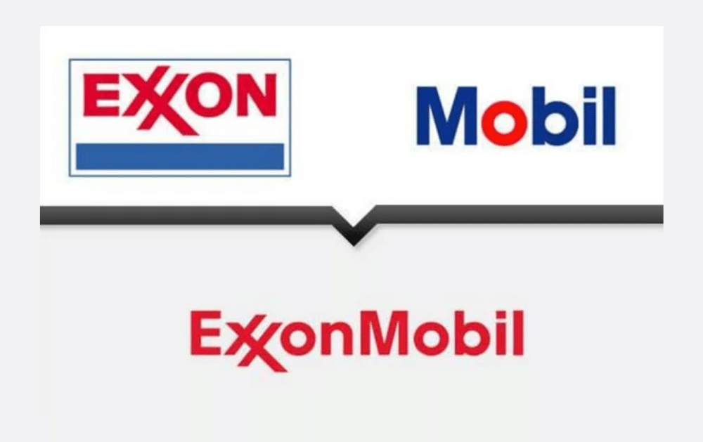
Source: cdn.slidesharecdn.com
A complete rebrand involves completely rethinking your marketing strategy. It starts with understanding what your company stands for, including your brand proposition, mission, values, and who your target customers are. Once you clearly understand these aspects, you can create a new brand identity that reflects your beliefs through words and visuals.
In 2014, Airbnb had a big makeover. They changed their look, logo, and messaging to show that they are more than just a place to stay. They wanted to focus on creating connections and a sense of belonging. This rebranding helped them become known as a global community of hosts and guests.
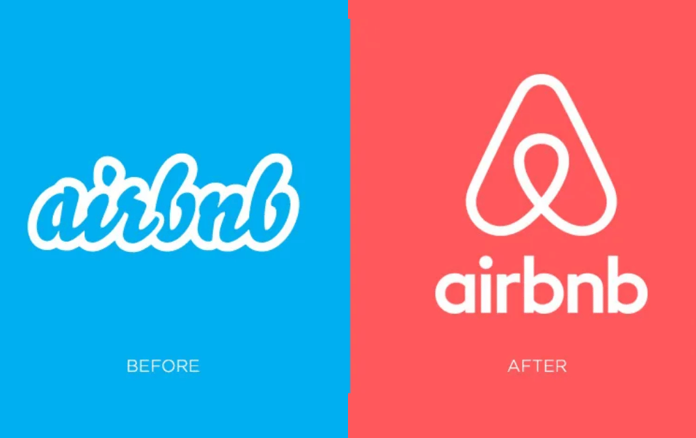
Source: i0.wp.com/
The Rebranding Mix involves four key elements:
Repositioning: This means changing how your brand is perceived by the target audience. It involves shifting the brand’s image, values, or target market to better align with the desired positioning.
Renaming: This refers to changing the brand’s name. It could be done to better reflect the brand’s identity, differentiate from competitors, or adapt to a new direction.
Redesign: This involves updating the visual elements of the brand, such as the logo, color scheme, typography, or packaging. The goal is to give the brand a fresh and updated look while maintaining its essence.
Relaunching: This step focuses on effectively communicating the new brand to the market. It includes developing a marketing strategy to announce the rebrand, generate awareness, and build excitement among customers.
Most projects need two or three of the four, not all of them. Deciding which ones, and defending the ones you leave out, is most of the strategy.
The honest list is shorter than most articles admit, and every item on it is conditional. A rebrand can sharpen a position, make you legible to a market that had you filed under the wrong heading, unify two companies after a merger, and give a flat team something to stand behind. Those are real gains and I have watched clients get all four.
What a rebrand cannot do is manufacture demand that was never there, fix a product people do not want, or repair a reputation while the behaviour that damaged it carries on. The failure I see most often is a company using a rebrand as a substitute for a decision. If you cannot say in one sentence what you now are that you were not before, you do not have a rebrand. You have a redesign, and you should scope it and price it as one.
The risks are more specific than the benefits, which usually means they are better understood. You can strand the customers who used your old cues to find you on a shelf or a results page. You can burn recognition that took a decade of media spend to buy. You can set off a backlash that becomes the story instead of the strategy, which Gap managed in a week. You can spend the whole budget and measure nothing afterwards, because the thing that was actually wrong was never the identity.
There is also an internal cost almost nobody budgets for. Every asset in the business has to change at once, and for several months the company is doing two jobs: its own, and the changeover. Signage, invoices, email footers, the deck the sales team has been quietly editing since 2019. If the rebrand is not worth that, it is not worth starting.
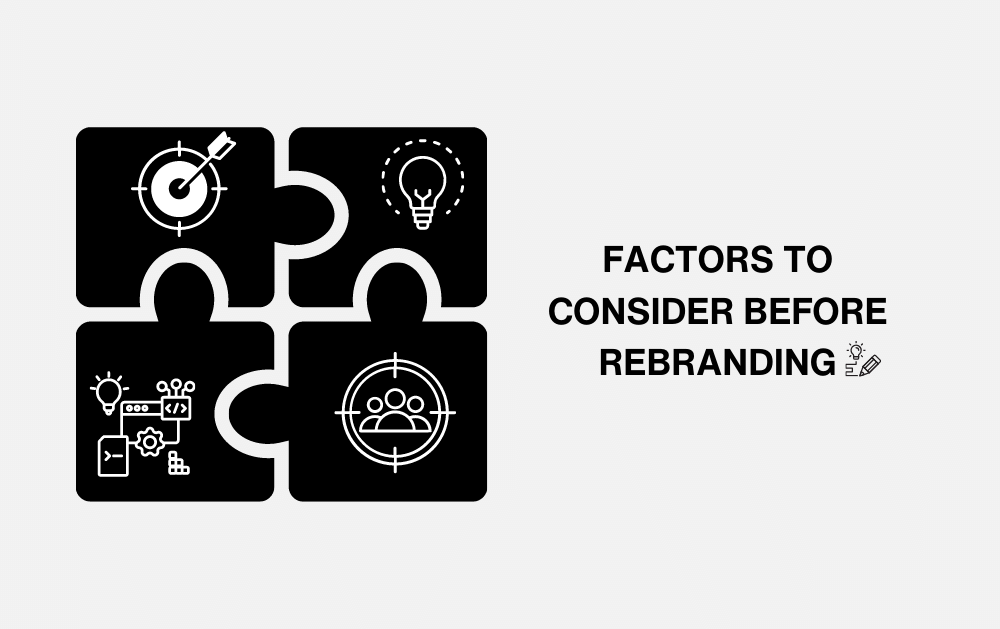
Clear strategy: Understand the purpose and goals behind the rebranding to ensure it aligns with your overall business strategy.
Audience’s needs: Evaluate how the rebranding will meet your target audience’s evolving needs and preferences.
Brand integrity: Ensure that the rebranding maintains the essence and values of your brand to maintain customer trust and loyalty.
Core purpose: Express and communicate your brand’s core purpose effectively through rebranding to create a compelling and differentiated identity.
Here are the steps to rebrand your company, explained in simple language:
Clearly stating the motivations for rebranding should come first. Determine the precise aims and objectives you hope to accomplish with the rebranding project. It could involve entering new markets, altering how people perceive your brand, or demonstrating a change in the principles or products that your business offers.
Conduct thorough research to know your audience, industry’s landscape, competitors, and market trends. Conduct a thorough brand audit & analyze your existing brand’s strengths, weaknesses, and areas for improvement. It will help you uncover what resonates and how to stand out. The same groundwork sits underneath a first-time build, which is why this step looks so much like building a brand strategy from scratch.
Clearly articulate the purpose and direction of your company, and establish the core values that guide your brand’s actions.
Vision: Your company’s vision is crucial and serves as a guiding light for all actions. Understand and redefine your vision as needed to align decisions and empower employees. During rebranding, the vision impacts various aspects like website redesign and hiring.
Mission: Mission defines how your company achieves its vision. If the mission changes, messaging must change too. It’s as crucial as a vision during rebranding. For example, Sweetgreen’s mission is to inspire healthier communities through real food, influencing its brand’s imagery and language.
Values: Values are the “why” behind your brand, driving your vision and mission. As brands evolve, old values may become unsustainable. Update them to reflect your current priorities and what your company truly values today.
During this phase, it’s time to get creative with your rebranding. Collaborate with designers and brand experts to craft a fresh brand identity that encompasses a new logo, color palette, typography, and visual assets. Make sure these elements align with your brand strategy and effectively convey the desired brand image. The mark itself follows the same route as any new one, which I have written up as our logo design process, and the wider sequence is set out in our complete branding process.
Start integrating the new brand identity across all pertinent touchpoints as soon as it is finished. This entails upgrading all customer-facing communications, such as your website, marketing collateral, signage, packaging, and social media accounts. The website is usually the longest pole, and it is worth checking it against the signs a site actually needs rebuilding before you assume a reskin will do.
Plan a strategic launch of your rebrand to generate excitement and engagement. This may include a marketing campaign, PR efforts, and engaging with your audience through various channels. Clearly articulate the reasons behind the rebranding and the benefits it brings to your target audience.
Keep track of how your brand is perceived by customers and stakeholders. Gather feedback and insights to assess the impact of your rebranding efforts make adjustments as needed.
By following these steps, you can successfully navigate the rebranding process and establish a refreshed and relevant identity for your company.
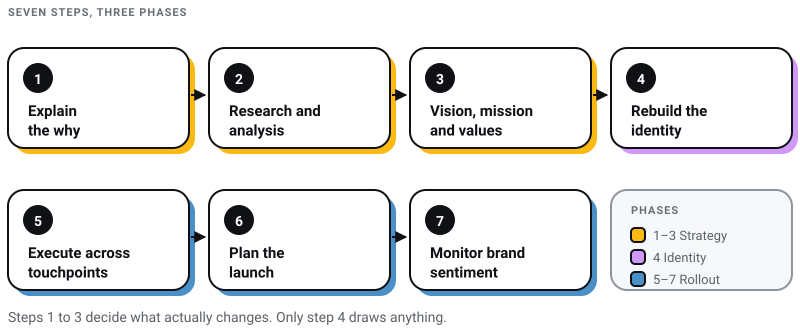
Here are the dos and don’ts of a rebranding strategy, explained in simple language:
By following these guidelines, you can increase the chances of a successful rebranding strategy for your company.
Simplified the mark, kept the personality, and resisted the usual pressure to look more serious as the company got bigger. The interesting footnote is what happened next: Intuit completed its acquisition of Mailchimp on 1 November 2021 in a deal valued at around twelve billion dollars, and the identity survived the acquisition intact. A brand distinctive enough to be worth keeping after you are bought is the strongest evidence a rebrand can produce.
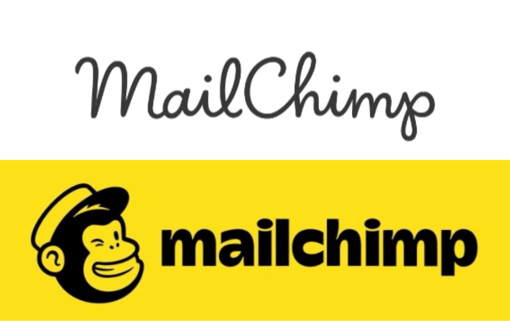
Source: asperbrothers.com
Tupperware turns up in case-study lists as an unqualified success: a heritage brand repositioning around sustainability and healthy living. Here is where those lists stop.
Tupperware filed for Chapter 11 on 17 September 2024. A group of lenders bought the brand name and operating assets for 23.5 million dollars in cash plus a debt-for-equity swap, and the business now trades as The New Tupperware Company. The repositioning was not wrong. Reusable containers really were the right side of the argument. But the company's problem was its distribution model, not its message, and a brand story cannot outrun a channel that stopped working. This is the single best reason to read case studies with a date attached.
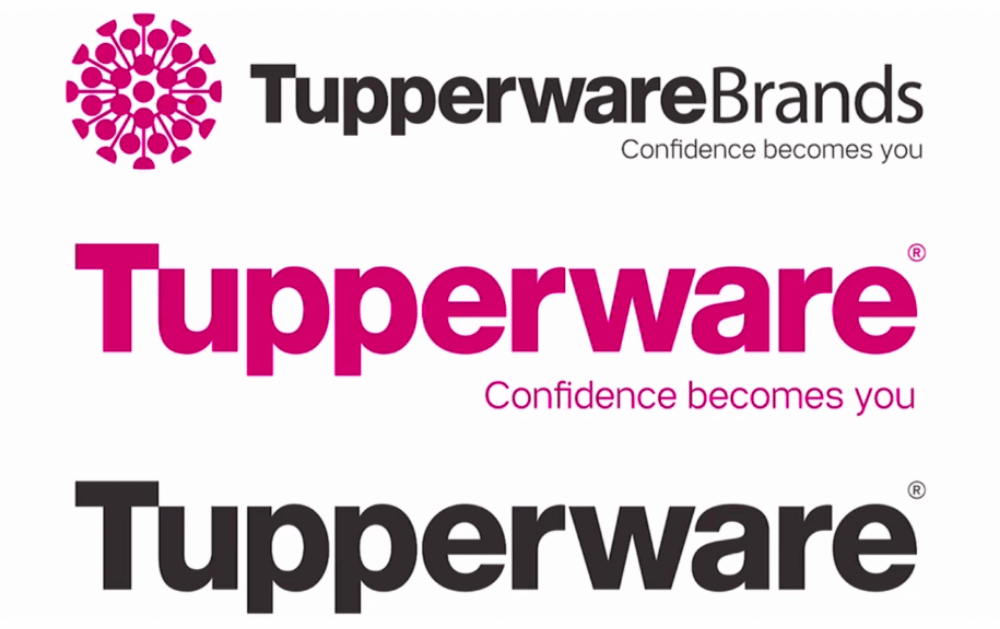
Source: columnfivemedia.com
Successful rebranding by staying true to core values of creativity and playfulness, expanding product offerings to appeal to a broader audience. Stay relevant while honoring brand essence and heritage.
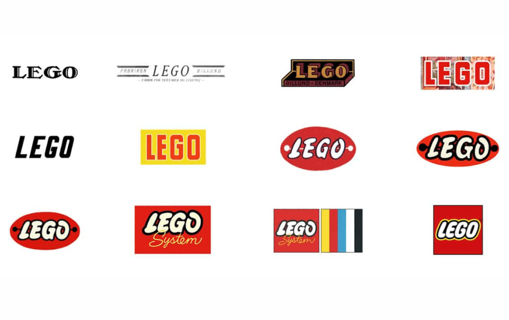
Source: www.zenbusiness.com
Dunkin’ Donuts announced on 25 September 2018 that it was dropping the second word, and the shortened name took over stores, packaging and advertising from January 2019. It kept the 1973 typeface and the pink and orange, so the equity transferred and the renaming read as a confirmation rather than a break. It also matched what customers already said out loud, which is the cheapest renaming there is. If people already shorten your name, you are not choosing a new one. You are ratifying the one they gave you.
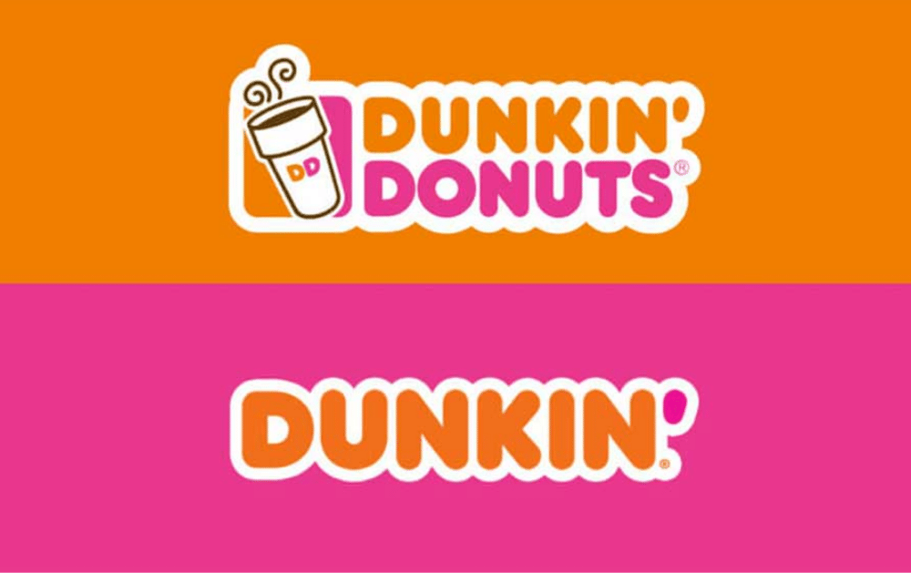
Source: www.majortom.com
Gap put a new logo on gap.com on 4 October 2010 and pulled it about a week later. You will see “six days” quoted everywhere; the exact count depends on which day you treat as the launch, so a week is the honest number. Marka Hansen, then president of Gap North America, said the company had seen an outpouring of comments in support of the blue box and that all roads were leading back to it.
The lesson usually drawn is that the design was bad. I think the real lesson is procedural. Gap changed a mark that carried decades of recognition without preparing anyone for why, then tried to crowdsource a fix mid-backlash, which turned a design decision into a referendum on the company's judgement. If you cannot explain the change before you make it, you are not ready to make it. Note also how quickly it was reversed: the cost of admitting a mistake in week one is trivial compared with defending it for a year.
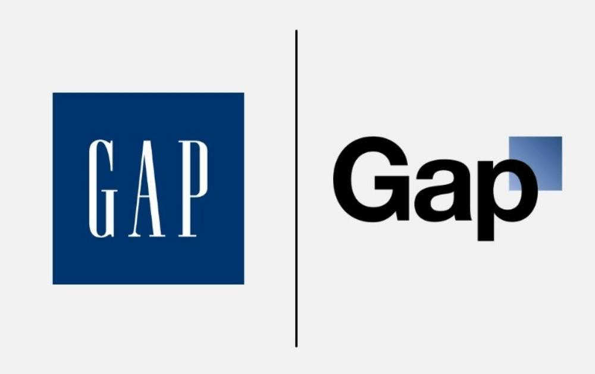
Source: www.thebrandingjournal.com
Tropicana Pure Premium launched redesigned North American cartons on 8 January 2009, replacing the orange-with-a-straw with a photograph of a glass of juice. PepsiCo announced on 23 February 2009 that it was going back to the original. Roughly seven weeks.
Two very precise figures follow this story around: a twenty per cent sales drop and thirty million dollars lost. The first is real but misdated in every retelling. Ad Age published it on 2 April 2009, five weeks after PepsiCo had announced the reversal, and the sales window it measured closed on 22 February, the day before that announcement. The published number cannot have been what prompted the decision, even though the story is always told as though it was. The thirty million dollars I could not trace to any filing, release or contemporaneous report, so it is not on this page.
What is not in dispute is the reversal and how fast it came, and the mechanism is worth more than either number. The old carton was doing navigational work in a chiller cabinet. Shoppers were not admiring it, they were finding it, using a shape they already knew. Replacing a recognition cue with a better photograph is not a style decision. It is a findability decision, and it should be argued on those terms.
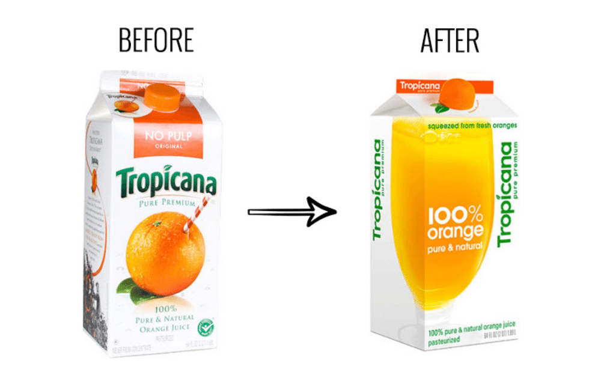
Source: cdn.thebrandingjournal.com
First, the spelling. The company styles itself Mastercard, one word, lower-case c, and has done since the 2016 redesign. The older MasterCard camel case is still very widely used.
The bigger move came on 7 January 2019, when Mastercard dropped its own name from the brand mark in most contexts, leaving the interlocking red and yellow circles to work alone. The company said its research found more than 80 per cent of people recognised the symbol without the word beside it.
This is not a failure. It is the most instructive example on the page, and the instruction is uncomfortable for anyone selling identity work. The circles could carry the brand alone only because Mastercard had spent decades and enormous sums making them unmistakable. Debranding is not a style you can adopt. It is a dividend you have to have earned, and most of the companies that copy the look have not earned it.
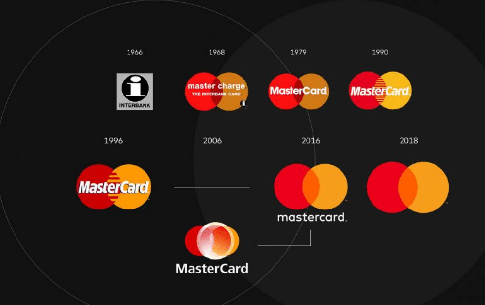
Source: static.dezeen.com
This is the one that changed most between the last version of this page and today, and it is the reason I rechecked everything else.
Weight Watchers became WW in 2018 to signal a move from dieting to general wellness. The abbreviation carried no meaning of its own, which meant the company had to spend money explaining a name that used to explain itself. In December 2025 it unveiled a new identity that puts the words back. The legal entity is still WW International, but the consumer brand went home after seven years.
It also went through the courts. WeightWatchers filed a prepackaged Chapter 11 on 6 May 2025 and emerged on 24 June 2025, cutting 1.15 billion dollars of debt, roughly seventy per cent of the 1.6 billion it went in owing. The trigger was not the naming. It was GLP-1 drugs taking apart the subscription model underneath.
Two lessons sit on top of each other here. An abbreviation is a tax you pay forever unless you are already famous enough not to need the words. And a rebrand aimed at a category shift cannot save you if the category itself is being replaced. WW was trying to become a wellness brand at the exact moment pharmacology was making its core product optional.
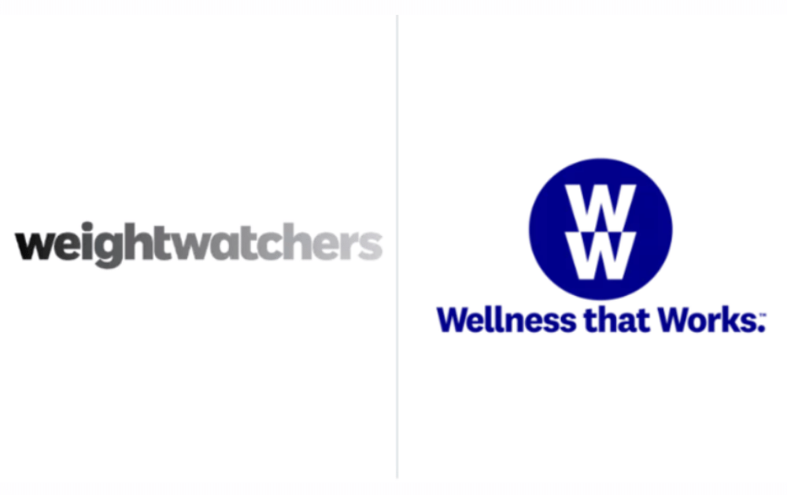
Source: originally credited to a Lexology image URL whose host no longer resolves at all, checked 31 July 2026. Link removed rather than left to rot.
On 28 October 2021, Mark Zuckerberg’s company made a big change to its brand. The parent company that owns Facebook, WhatsApp, Messenger, Instagram, and other products is now called Meta, while the service itself, launched in 2004, is still Facebook. They not only changed the name but also the logo and typeface. They even have a new website called Meta.com.
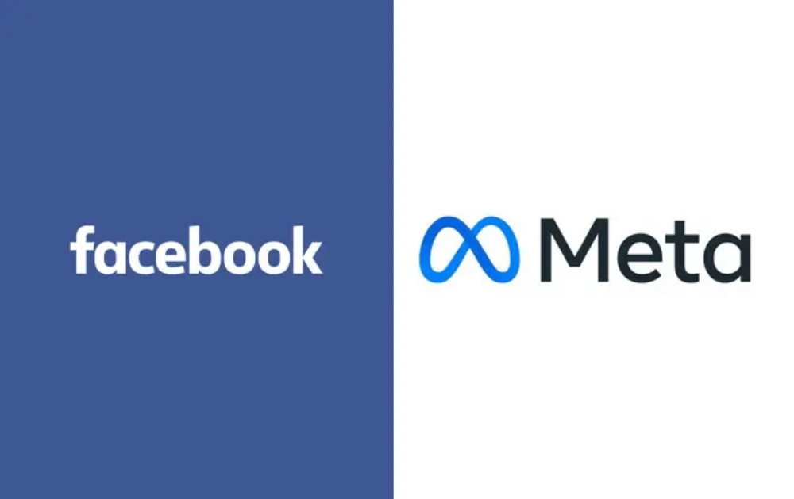
Source: cdn.thelivemirror.com
The stated reason was that the company did more than social media, and was expanding into the metaverse, augmented reality and virtual reality. The name was chosen to describe that destination.
Nearly five years on, the name is still Meta and the destination has moved. The division that builds the metaverse, Reality Labs, is still deeply loss-making: CNBC reported on 29 July 2026 that it lost 4.62 billion dollars in the second quarter alone, and the company's public centre of gravity has shifted to artificial intelligence. Nobody expects it to rename itself again.
That is the part worth taking away, and it cuts against the usual telling. Naming yourself after a bet is a real risk, because a name is far harder to change than a strategy and it goes on outliving the thing it was chosen to describe. Meta got away with it, mostly because “meta” is abstract enough to survive being repointed. A more literal name would not have been so lucky. If you are about to name a company after where you are going, ask what the name means if you go somewhere else instead.
Debranding is the opposite manoeuvre, and it is more interesting than it sounds. Rather than adding identity you remove it, betting that what remains is recognisable enough to carry itself. Mastercard is the clearest live example, which is why it appears twice on this page.
The entry test is simple and most companies fail it. Debranding only works when people can already name you without the name. If they cannot, you have not stripped your identity back to its essentials. You have deleted it and called the result minimalism.
| Move | What actually changes | When it is the right call |
|---|---|---|
| Rebrand | Name, logo, visual system, messaging or positioning, usually several at once | What the company is has genuinely changed, or what the market believes about it is wrong and will not correct itself |
| Debrand | Visible branding is reduced or removed so the product or symbol stands alone | Recognition is already high enough that the name is redundant |
| Brand refresh | Existing elements are modernised; the core identity and its recognition are deliberately kept | The identity still fits the strategy but has aged in type, colour or application |
Most of the projects that arrive at the studio asking for a rebrand need a refresh, and a fair number of the ones asking for a refresh need a rebrand. The difference is not the size of the budget or the amount of visual change. It is whether the strategy underneath has moved.
If the strategy is intact and the identity has simply aged, refresh it. You keep the recognition you already own, the changeover is cheap, and nobody has to be re-taught who you are. If the strategy has moved and the identity is now describing a company that no longer exists, a refresh will only make the mismatch look deliberate. That is the question worth arguing about in the first meeting, and it is a business question rather than a design one.
Here is what the day of checking actually taught me. Three of the companies this page holds up as instruction ended up somewhere the original lesson did not predict: Tupperware in bankruptcy court, WeightWatchers there too and back under its old name, Starbucks hiring a chief executive to undo the drift. None of those outcomes had anything to do with the design work. In every case the identity was fine and the business underneath it had moved.
So the test I now put to clients before we quote is not a design question. What will be true about your company after this that is not true today? If the honest answer is that the logo will look better, keep the money. If the answer is that you are now a different business and the old identity is actively arguing against you, then the work is worth doing, and you should expect to be judged on the promise rather than the artwork.
And date your case studies. Mine now carry the day I checked them, because in three years half of this page will be wrong again and I would rather you could see exactly how old the evidence is.
14 min read 28 cited sources Branding
Author
Khurshid Alam is the founder of Pixel Street, an AI-native design & development studio. Design thinking on weekdays and spreadsheets on weekends.
He writes about growth, design, and AI, mostly because someone has to say the quiet parts out loud.
Branding
From small-time gigs to booming creative industries, web and graphic designers have taken centre stage. Whether you’re a rookie or a design virtuoso…
 Branding
Branding
Hey there! Have you ever watched a commercial that made you smile, feel inspired, or even brought you to tears?
 Branding
Branding
Hey there! Have you ever wondered how some ads just make you want to buy something right away? Or how a website convinces you to click a button and…


{kind=link}
{kind=link}
{kind=link}
{kind=link}
{kind=link}
{kind=link}
{kind=link}
{kind=link}
{kind=link}